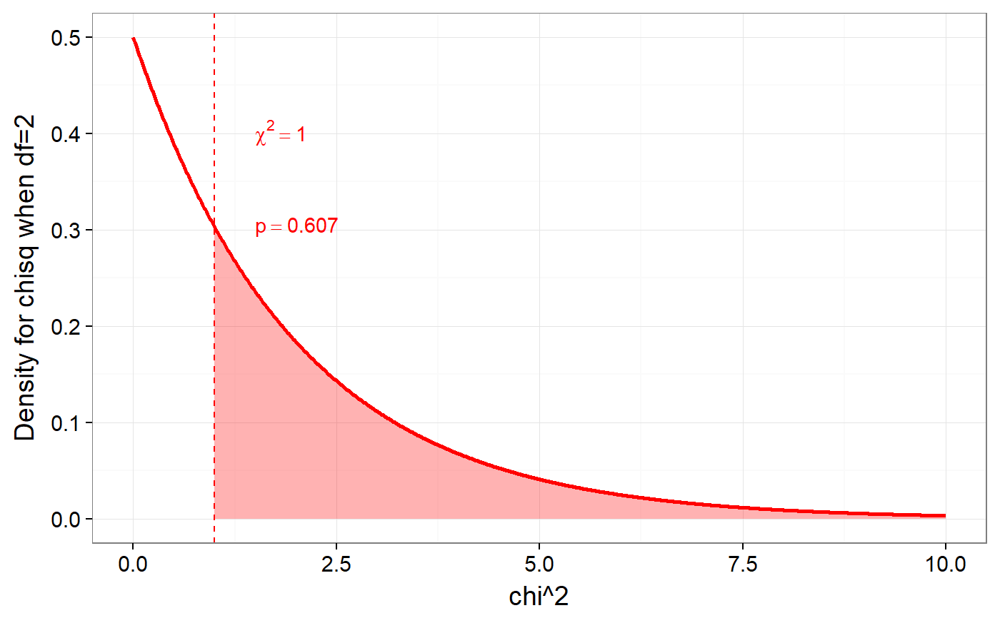
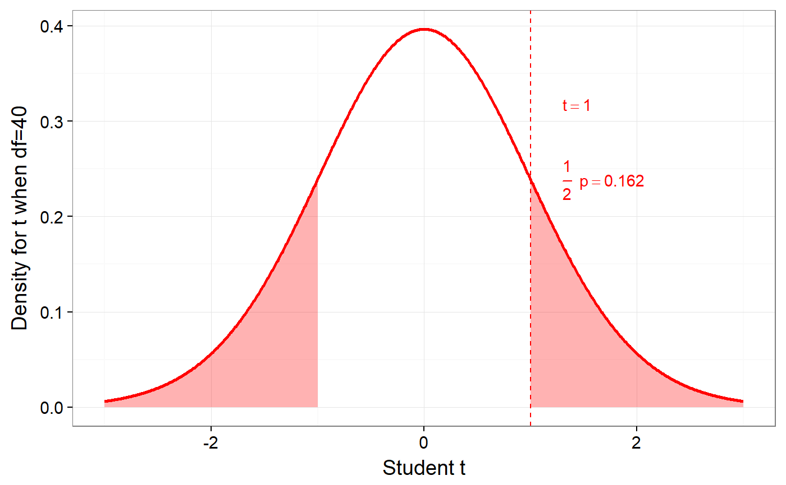
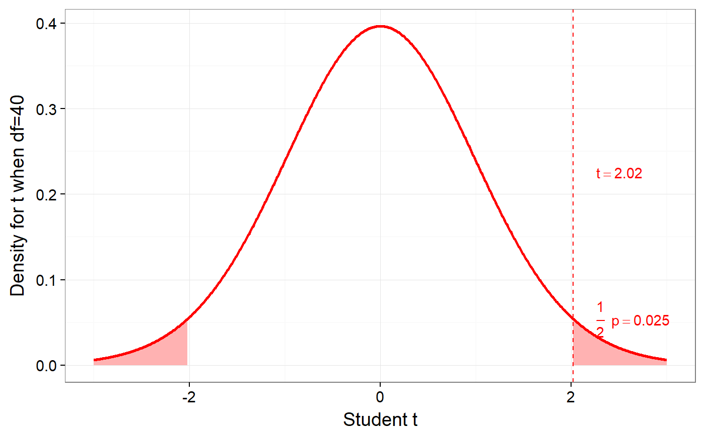

didacticPlot is useful for making ggplot2 plots of distributions of t, F, Chi^2, and Pearson r, showing a given value, and shading the arie covering the more extreme values. didacticPlotTheme is the basic theme.
didacticPlot(foundValue, statistic, df1, df2 = NULL, granularity = 1000, xLim = NULL, yLab = NULL, lineCol = "red", lineSize=1, surfaceCol = "red", textMarginFactor = 20, sided="two") didacticPlotTheme(base_size = 14, base_family = "")
| foundValue | The value to indicate (the 'found' value). |
|---|---|
| statistic | One of "r", "t", "f" or "chisq". |
| df1, df2 | The degrees of freedom; only use df1 for the r, t and chi^2 test; for the F-test, use df1 for the degrees of freedom of the denominator and df2 for the degrees of freedom of the numerator. |
| granularity | Steps to use for x-axis. |
| xLim | Vector; minimum and maximum values on x axis. |
| yLab | Label on y axis. |
| lineCol | Colour of density line. |
| lineSize | Size of density line. |
| surfaceCol | Colour of coloured surface area. |
| textMarginFactor | Used to calculate how close to the vertical line text labels should appear. |
| sided | Whether to make a plot for a 2-sided or 1-sided test. |
| base_size, base_family | Passed on to the grey ggplot theme. |
didacticPlot returns an object that contains the plot in the $plot element.
didacticPlot(1, statistic='chisq', df1=2);#> Warning: `panel.margin` is deprecated. Please use `panel.spacing` property instead#> Warning: Ignoring unknown aesthetics: x.lo, x.hi#> Warning: Ignoring unknown aesthetics: x.lo, x.hididacticPlot(1, statistic='t', df1=40);#> Warning: `panel.margin` is deprecated. Please use `panel.spacing` property instead#> Warning: Ignoring unknown aesthetics: x.lo, x.hi#> Warning: Ignoring unknown aesthetics: x.lo, x.hididacticPlot(2.02, statistic='t', df1=40, textMarginFactor=25);#> Warning: `panel.margin` is deprecated. Please use `panel.spacing` property instead#> Warning: Ignoring unknown aesthetics: x.lo, x.hi#> Warning: Ignoring unknown aesthetics: x.lo, x.hi### Two sample t-test for n1 = n2 = 250, showing ### p-value of 5% # a<-didacticPlot(1.96, statistic='t', df1=498);